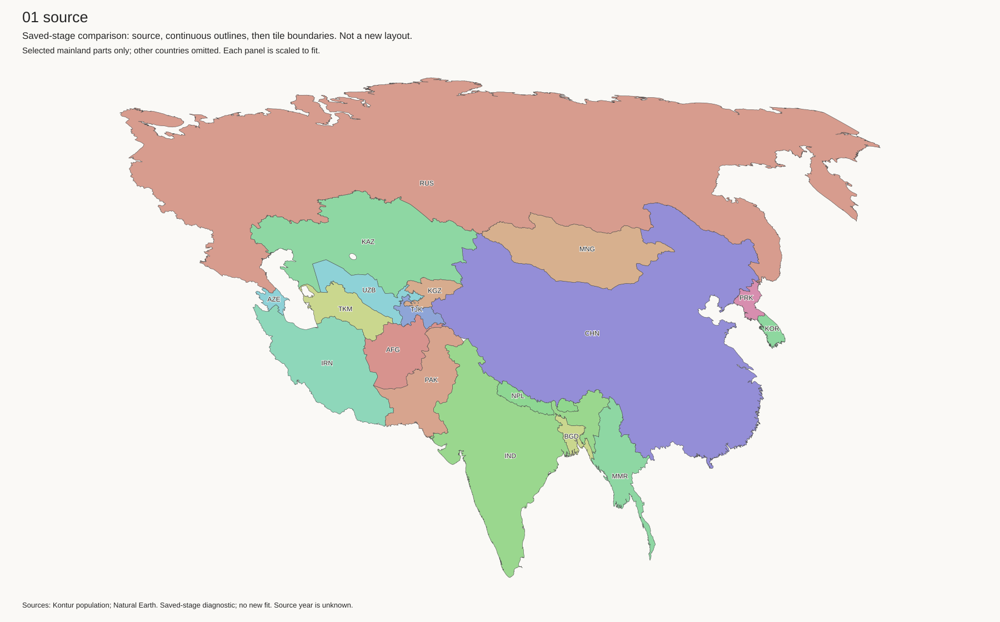
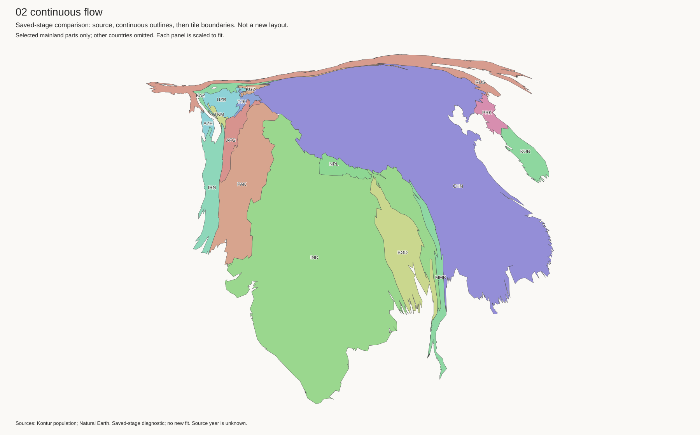
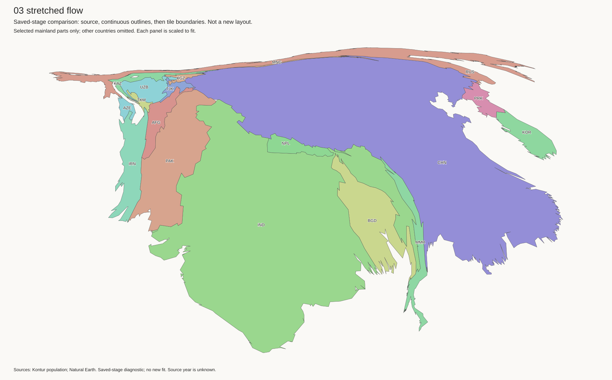
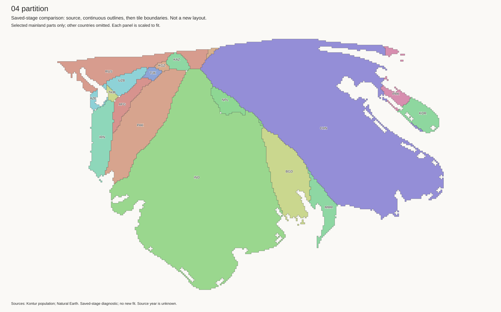
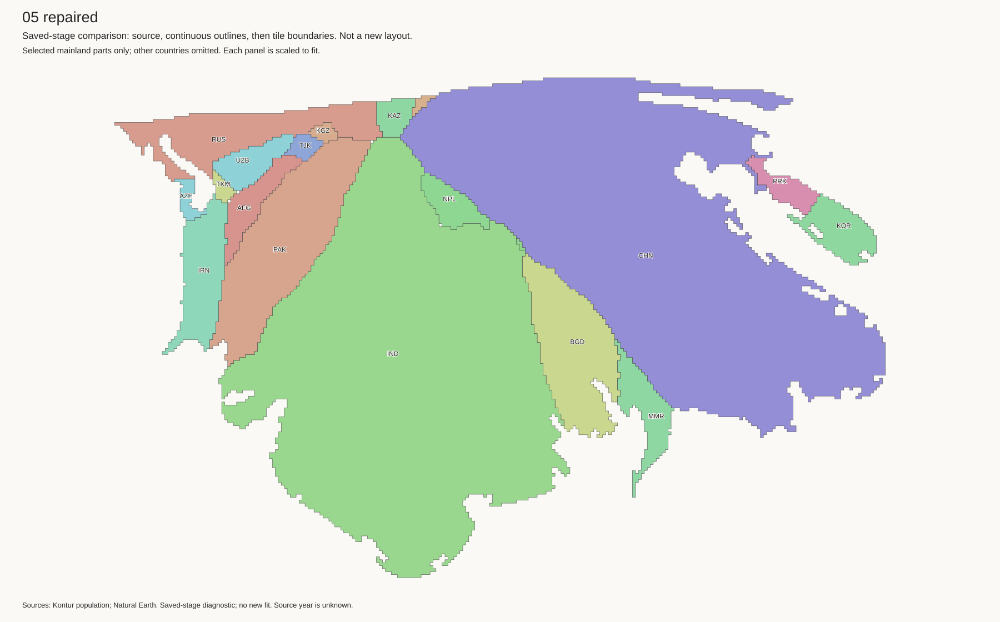

The main distortion starts in the continuous population fit. Tile allocation and fragment repair then move Kazakhstan into the narrow tip. These are saved stages of the preferred Equal Earth pipeline, not new layouts. No production file changed.
The source shapes are recognisable. Input preprocessing changes their outline scores by only 0.01–0.02. After the continuous fit, Russia is a narrow strip above China, and Kazakhstan is compressed near the western end. This happens before square tiles, border repair, island placement, or lake insertion.
The target-area pressure is large. Relative to each country's share of the represented mainland source area, Russia receives 0.142 times that share, Kazakhstan 0.118, and Mongolia 0.037. China receives 2.458 times its share and India 7.438. These are normalised area-share ratios, not linear scale factors. The continuous fit must accommodate these changes within connected geography. This is consistent with the observed compression; it does not prove that this particular distortion is unavoidable.


The saved partition settings use the continuous outline as a footprint, with flow-guide weight 8. Tiles outside their country's flow raster incur a squared distance cost. Thus the large distorted shape remains influential.
However, sites_in_flow=false. The partition code replaces the flow
centres with original projected population centres after a global scale and
translation. Russia's target site is 113 tiles from its flow centroid, mostly
west. Kazakhstan's target is 29 tiles away, mostly east. China and India differ
by about 12 and 8 tiles. These different targets can change relative positions.
The saved stages show that they do; a matched test is still needed to isolate
the effect of the centre rule from the footprint and guide costs.
Kazakhstan's centroid moves from x=553.76 in the scaled flow to x=600.20 in the partition. Russia moves from x=653.28 to x=564.98. The continuous outlines and partition use the same coordinates at this point.


Kazakhstan has one connected 134-tile piece at the partition stage. It does not need fragment repair. But the repair log records 170 Russia–Kazakhstan swaps, all initiated to repair Russia. These preserve tile counts while moving Kazakhstan's centroid from (600.20, 467.80) to (613.53, 470.55): about 13 tiles east. Its width-to-height ratio changes from 1.33 to 1.00.
The repair objective reduces disconnected fragments. It does not guarantee country position or borders. The connected neighbour can move as its cells are exchanged for cells in the fragmented country. This is a specific mechanism that helps put Kazakhstan at the narrow tip above India.

The margin-one layout, mainland docking, and island-and-lake integration change these large outlines very little. Kazakhstan's centroid ends at (613.75, 470.48). The island and lake changes did not cause this pinch.
| Stage | Russia error | China error | India error | Kazakhstan error |
|---|---|---|---|---|
| Continuous fit | 0.8967 | 0.5416 | 0.4005 | 0.6690 |
| Tile allocation | 0.5615 | 0.4718 | 0.4467 | 0.4001 |
| Fragment repair | 0.4639 | 0.4724 | 0.4471 | 0.5362 |
| Islands and lakes | 0.4705 | 0.4714 | 0.4503 | 0.5040 |
Error is one minus outline intersection-over-union after area scaling and centroid alignment. Lower is better. It measures shape, not position. Here the reference is the original flow-input geometry, not the later dry-land lake guide; do not directly compare these values with the earlier sparse-border scores.
Other stages: margin one, mainland docking, integrated islands and lakes.
The cuts were applied after all these operations. They did not remove the inherited regional distortion. The local search kept shape-guide centres fixed; only four endpoint components could move, and India could not move at all. Opening a few contacts did not provide a coordinated alternative shape.
The earlier contact-graph test asked whether Russia and China could become independent groups. That is not required to improve their shapes. A protected path through southern Asia does not explain away the pinch and is not a reason to cut dense borders.
These tests are proposed, not completed. The approved development baseline remains islands plus empty lakes.
Measurements, repair evidence, and input hashes · Artifact checksums
Run trace_kazakhstan.py output/auto-cartogram NEW_OUTPUT with the
geometry Python environment. The script reads saved stages and does not run a
new fit. Panels show selected mainland parts only, each scaled to fit. White
space can contain omitted countries. The source, continuous fit, partition,
and repaired panels were checked visually.